2026-09-09. 왼쪽은 권위 루트의 프로토타입 탭을 직접 클릭한 화면, 오른쪽은 /appmap에서 같은 실제 Expo 컴포넌트를 연 화면입니다. 가상 고춧가루와 앱의 대파는 서로 다른 데이터입니다. 기존 공통 토큰, ⋮ 헤더, 비활성 opacity, 실제 상세 배경·네이티브 Modal은 유지했습니다. 이미지 크기를 억지로 늘려 일치시킨 비교가 아닙니다.
범위 제한: 폐기 하위 탭의 사유 저장·예상 손실 미리보기는 현재 서버 계약과 달라 미지원 표시를 남겼습니다. 전체 페이지/네이티브/독립 외부 검수의 최종 종결 자료가 아닙니다.
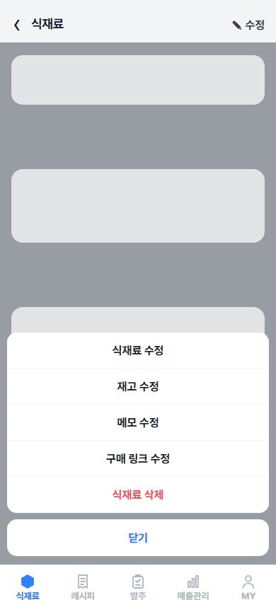
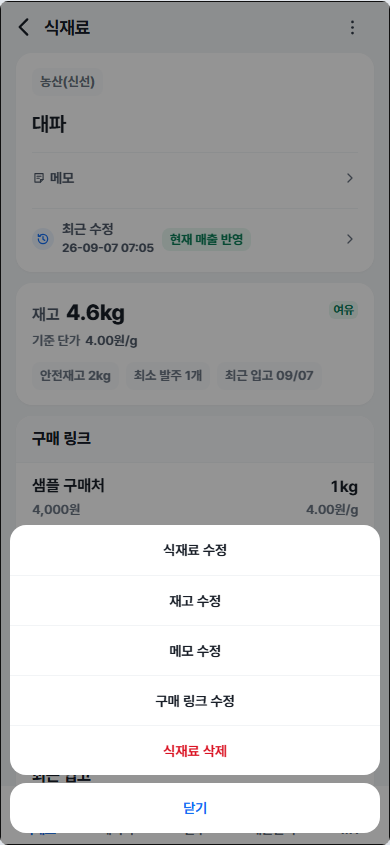
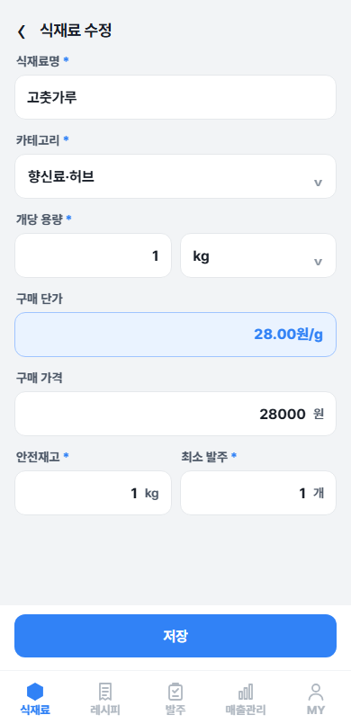
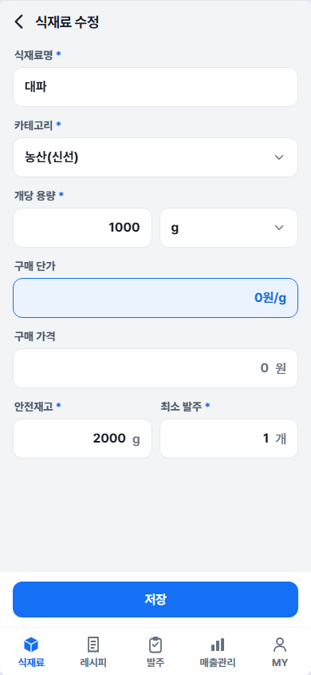
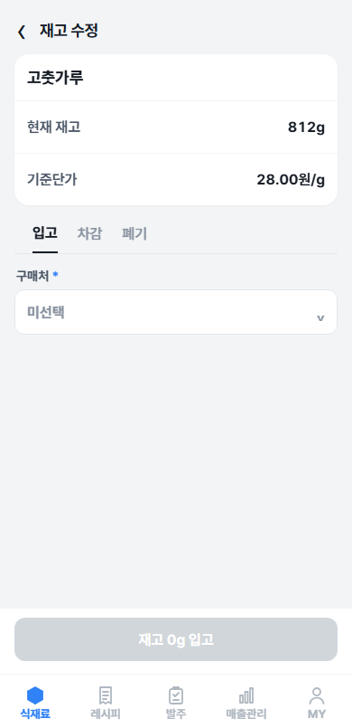
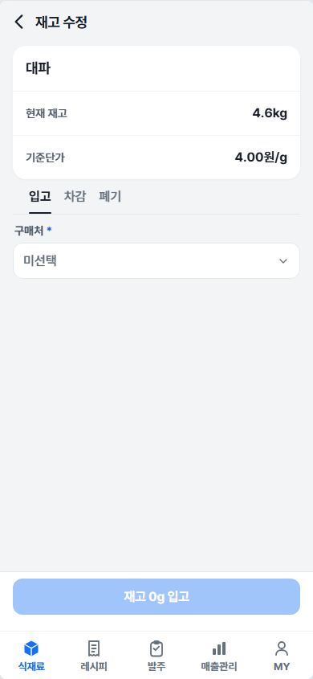
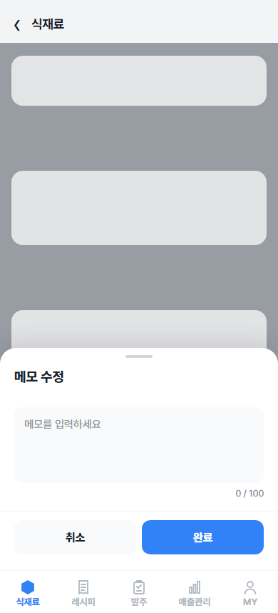
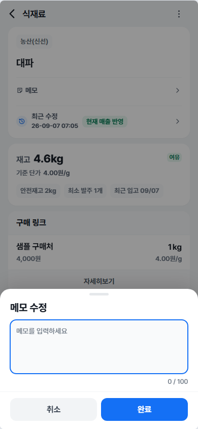
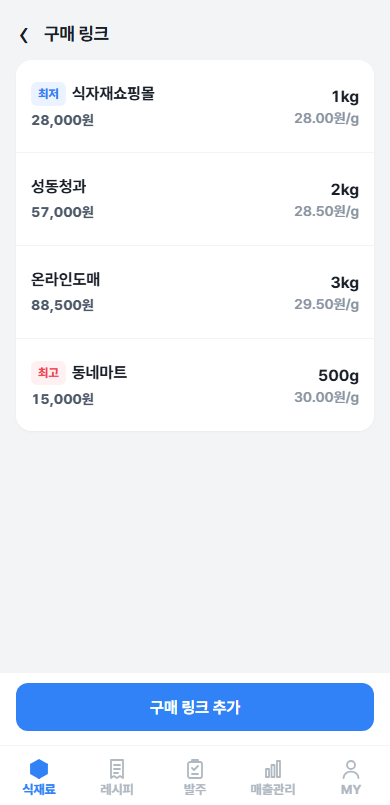
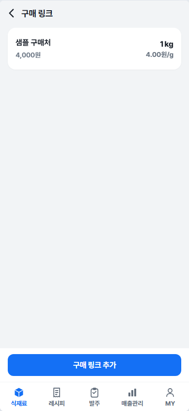
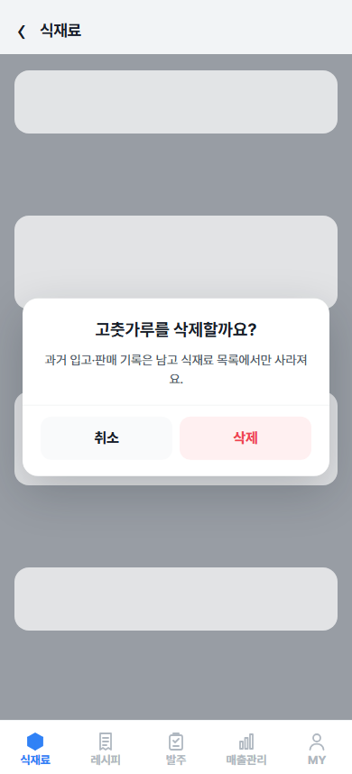
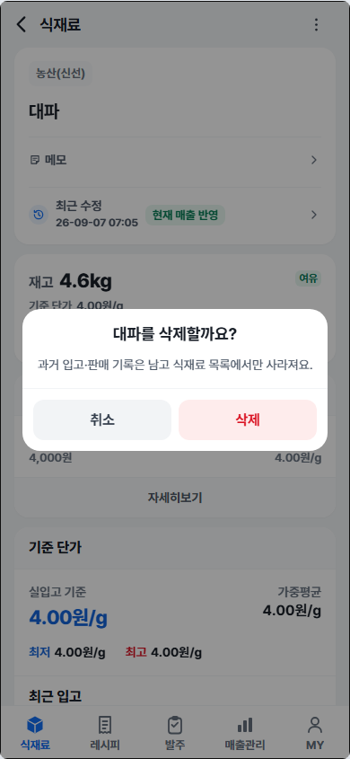